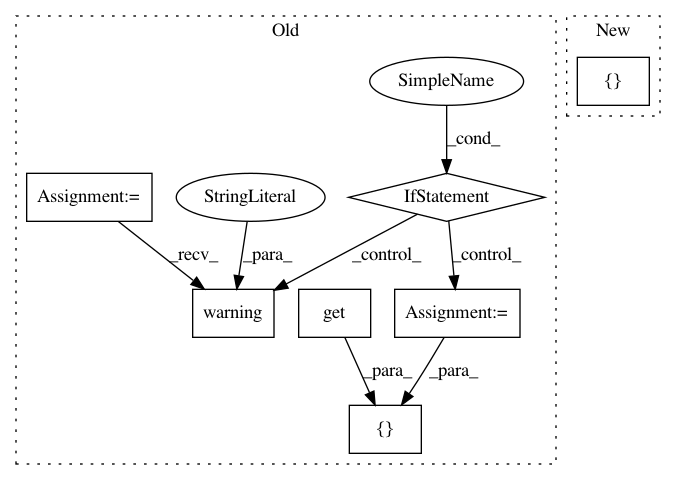

287f0f4f688a823255bcc36b97dc435a230273a8,homeassistant/components/binary_sensor/mqtt.py,,setup_platform,#Any#Any#Any#Any#,26
Before Change
return False
sensor_class = config.get("sensor_class")
if sensor_class not in SENSOR_CLASSES:
_LOGGER.warning("Unknown sensor class: %s", sensor_class)
sensor_class = None
add_devices([MqttBinarySensor(
hass,
config.get("name", DEFAULT_NAME),
config.get("state_topic", None),
sensor_class,
config.get("qos", DEFAULT_QOS),
config.get("payload_on", DEFAULT_PAYLOAD_ON),
config.get("payload_off", DEFAULT_PAYLOAD_OFF),
config.get(CONF_VALUE_TEMPLATE))])
// pylint: disable=too-many-arguments, too-many-instance-attributes
After Change
// pylint: disable=unused-argument
def setup_platform(hass, config, add_devices, discovery_info=None):
Add MQTT binary sensor.
add_devices([MqttBinarySensor(
hass,
config[CONF_NAME],
config[CONF_STATE_TOPIC],
config[CONF_SENSOR_CLASS],
config[mqtt.CONF_QOS],
config[CONF_PAYLOAD_ON],
config[CONF_PAYLOAD_OFF],
config.get(CONF_VALUE_TEMPLATE)
)])
// pylint: disable=too-many-arguments, too-many-instance-attributes
In pattern: SUPERPATTERN
Frequency: 3
Non-data size: 7
Instances
Project Name: home-assistant/home-assistant
Commit Name: 287f0f4f688a823255bcc36b97dc435a230273a8
Time: 2016-04-06
Author: jaharkes@cs.cmu.edu
File Name: homeassistant/components/binary_sensor/mqtt.py
Class Name:
Method Name: setup_platform
Project Name: home-assistant/home-assistant
Commit Name: 40c71b5d963d752402ccdc3de12faa58c974743e
Time: 2016-09-02
Author: mail@fabian-affolter.ch
File Name: homeassistant/components/binary_sensor/command_line.py
Class Name:
Method Name: setup_platform
Project Name: home-assistant/home-assistant
Commit Name: ced3cd2616332af50bf9a8a4a7241aae017c34e8
Time: 2017-03-16
Author: mezz@johnmihalic.com
File Name: homeassistant/components/sensor/neurio_energy.py
Class Name:
Method Name: setup_platform